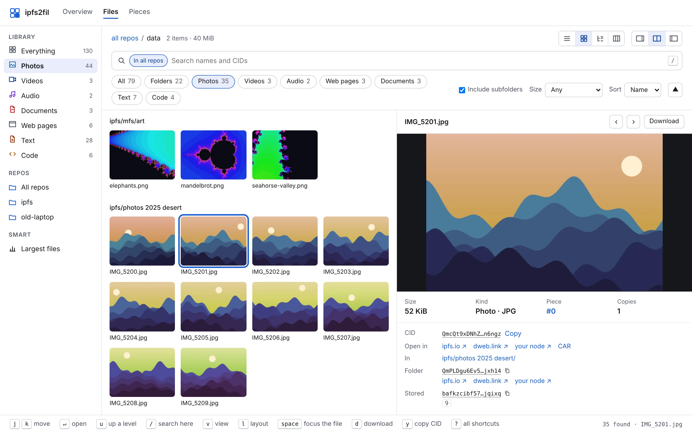
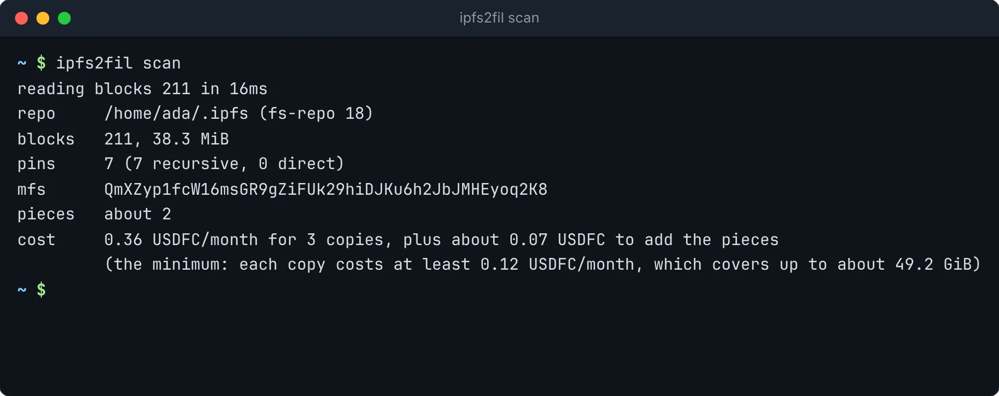

Every repo version
fs-repo 0 through 18: go-ipfs 0.2 to kubo 0.43, with flatfs, leveldb, badger, pebble and custom datastore specs. Old pin layouts and the MFS root are read too.
For anyone with an IPFS node full of things they want to keep
ipfs2fil reads an IPFS repo (kubo, go-ipfs or IPFS Desktop, any version), packs every pin, your MFS files and stray blocks into pieces, and stores copies with Filecoin storage providers that prove on chain they still hold them. Each archive carries its own explorer, so any IPFS gateway can show you what is in it.
curl -fsSL https://github.com/jbenet/ipfs2fil/releases/latest/download/install.sh | sh

Below, two made-up repos of a few GiB go through the real ipfs2fil, with the storage simulated so nothing is paid for, and the waits sped up. The live demo is a real archive.
ipfs2fil scan reads $IPFS_PATH (or ~/.ipfs, or --repo) and tells you how many blocks, pins and pieces there are, and the monthly price. Nothing is written anywhere.

ipfs2fil up links every pin, the MFS tree and leftover blocks under one root, cuts the blocks into pieces, shows the cost and any deposit, and after you say yes stores the copies. Each piece leaves your machine once; providers copy it from each other.
Run it again whenever the repo changes: pieces are cut where the content says, so pieces already stored are skipped. Ctrl-C or a failure is safe; run it again and it carries on.
Keep a list of repos with ipfs2fil repos add and up --all archives them together: one confirmation, shared data sets, and a block an earlier repo stores is never stored twice.
ipfs2fil status reads your data sets from chain: which providers hold a copy, when each last proved it, and how many days your deposit lasts. ipfs2fil verify fetches every piece back, checks every block against its CID, and asks the IPFS network whether the CIDs are announced.
Run ipfs2fil explore to browse on your machine, or open https://dweb.link/ipfs/<root>/explorer/ once the archive is stored. Photos, video, audio, PDFs and code open right in the page. Every list filters, sorts and moves with the keyboard.
Try the live explorer on the demo archive
fs-repo 0 through 18: go-ipfs 0.2 to kubo 0.43, with flatfs, leveldb, badger, pebble and custom datastore specs. Old pin layouts and the MFS root are read too.
Recursive and direct pins, your MFS files, and orphan blocks no pin reaches (on by default), all linked under one archive root.
Piece cuts depend only on the blocks, so a re-run skips every piece already stored and an edit changes only nearby pieces. Dates and providers live in the index, not the data.
Pieces go to Filecoin Onchain Cloud, where providers prove on chain, over and over, that they still hold them. Three copies by default, paid from your own wallet.
Providers announce the blocks to the IPFS network, so any gateway or node can fetch a file by its CID, and verify checks that they do.
Give each machine the same wallet key. The catalog of every machine's repos is kept, encrypted, in your own data sets on chain, so shared blocks are stored once and status --all sees everything.
Ctrl-C or a failure never wastes work: packing reuses its cache, uploads resume, and on-chain adds wait out gas price spikes while uploads keep going.
A single Go binary with no cgo, built for every platform kubo ships for, with checksums and signed build provenance on every release.
You need an IPFS repo (kubo, go-ipfs, or anything that runs them, like IPFS Desktop) and a Filecoin wallet with some FIL for gas and USDFC for storage. Add --network calibration to any command to try it free on the testnet first.
curl -fsSL https://github.com/jbenet/ipfs2fil/releases/latest/download/install.sh | shOr go install github.com/jbenet/ipfs2fil/cmd/ipfs2fil@latest, or a binary from releases.
ipfs2fil scan # blocks, pins, pieces and the monthly costipfs2fil wallet new # makes ~/.ipfs2fil/wallet.key, prints its address
ipfs2fil wallet # FIL, USDFC and the Filecoin Pay depositOr point it at a key you already have with IPFS2FIL_KEY_FILE. ipfs2fil never prints the key or copies it anywhere.
ipfs2fil up # pack, show the cost, store after you say yesipfs2fil status # providers, pieces, last proof, days funded
ipfs2fil verify # fetch every piece back, check every block
ipfs2fil explore # http://127.0.0.1:8484/Several repos? ipfs2fil repos add ~/.ipfs for each, then ipfs2fil up --all. Every command explains itself: ipfs2fil help <command>.
scan | Read the repo and say what an archive would hold and cost |
up | Pack and push in one go, after confirming the cost |
pack | Build the archive and its pieces on disk |
push | Upload pieces that are not stored yet |
status | Copies, funding and proofs, read from chain |
verify | Fetch pieces back and check every block |
explore | Serve the HTML explorer, with the files themselves |
repos | Keep a list of repos to archive together (add, ls, rm) |
wallet | Make a wallet key to fund, or show its balances |
Yes. Pieces are stored as they are, and providers announce the CIDs to the IPFS network, so anyone who has a CID can fetch that content. Only archive what you are happy to publish, or encrypt it before adding it to IPFS. (The catalog of your repos is the exception: it is encrypted with a key derived from your wallet key, and repo paths never leave your machine.)
scan prints the monthly price before anything happens, and up shows it again with any deposit it needs and waits for your yes. Storage is paid in USDFC through Filecoin Pay from your own wallet; gas is paid in FIL. status says how many days your deposit lasts.
Any repo in the fs-repo format that kubo and go-ipfs use, from go-ipfs 0.2 (fs-repo 0) to kubo 0.43 (fs-repo 18), on flatfs, leveldb, badger or pebble. That includes the repos of IPFS Desktop and other apps that run kubo inside them.
No. Stores are opened read-only and migrations are never run, so it is safe while the daemon runs. Archives are written to ./ipfs2fil-archive, or under ~/.ipfs2fil for listed repos.
verify fetches every piece from every copy and lists any that are bad; push uploads again what a copy is missing. status shows when each copy last proved it holds your data.
Yes. Every file has a CID, so any IPFS gateway or node can fetch it, and the archive root opens the explorer in a browser. The pieces are plain CAR files, and the index lists which piece holds each block.
Yes: add --network calibration and fund a wallet from the Calibration faucets.